K562 Neither DNase matched - State 22:ReprW (n=18)
K562 Neither DNase matched - State 22:ReprW (n=18)
[
See group descriptions
]
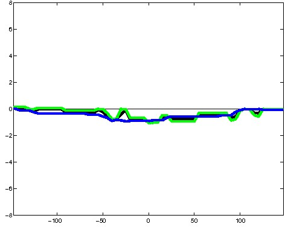
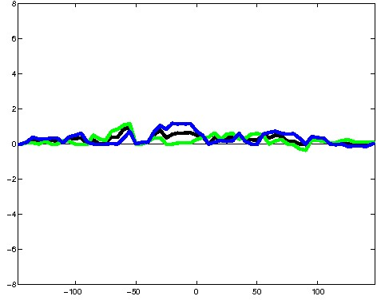
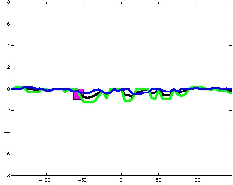
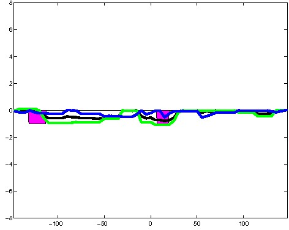
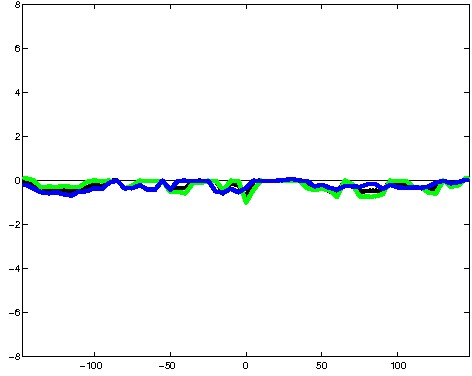
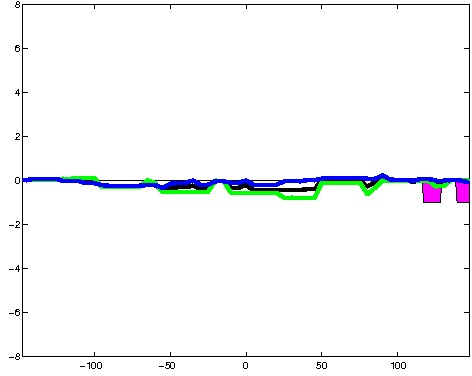
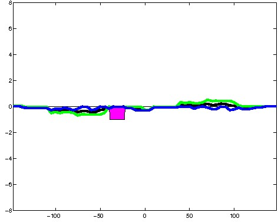
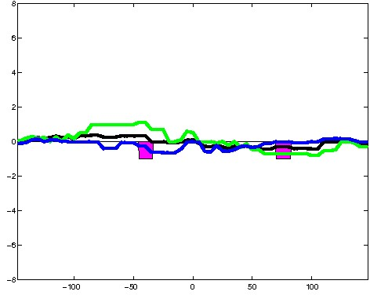
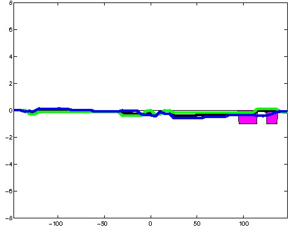
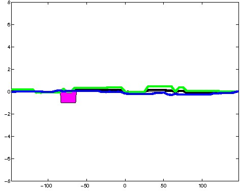
; picked in K562 (state 22:ReprW, DNase); matched; chr2:37,054,629-37,054,923 (295bp)") 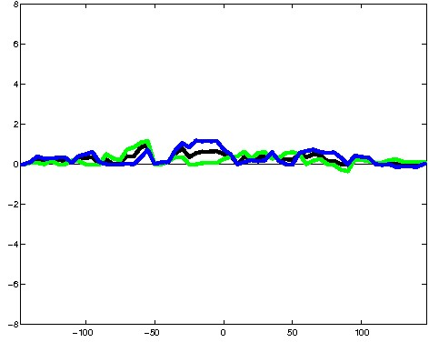
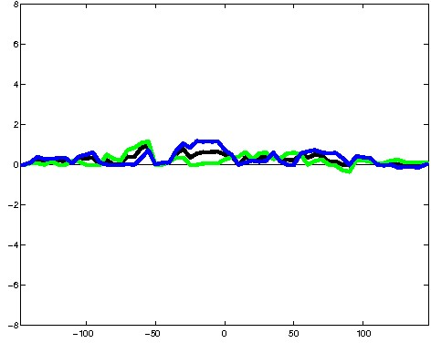
; picked in K562 (state 22:ReprW, DNase); matched; chr10:6,938,869-6,939,163 (295bp)") 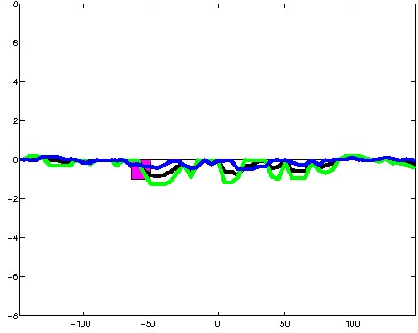
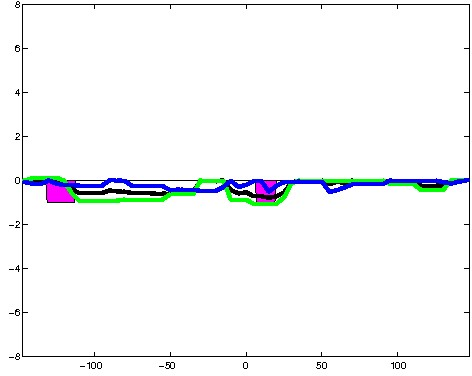
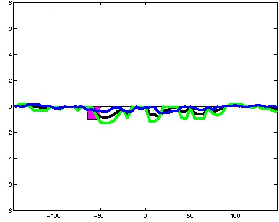
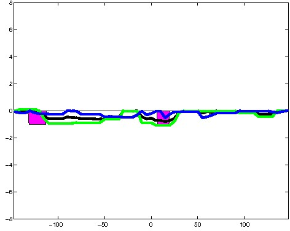
; picked in K562 (state 22:ReprW, DNase); matched; chr11:34,597,969-34,598,263 (295bp)") 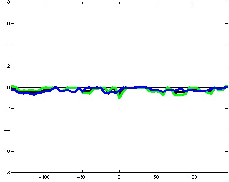
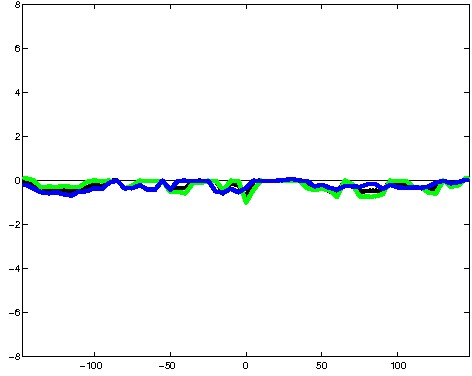
; picked in K562 (state 22:ReprW, DNase); matched; chr9:95,908,729-95,909,023 (295bp)")
; picked in K562 (state 22:ReprW, DNase); matched; chr12:31,737,109-31,737,403 (295bp)")
; picked in K562 (state 22:ReprW, DNase); matched; chr6:136,861,169-136,861,463 (295bp)")
; picked in K562 (state 22:ReprW, DNase); matched; chr4:152,073,329-152,073,623 (295bp)") 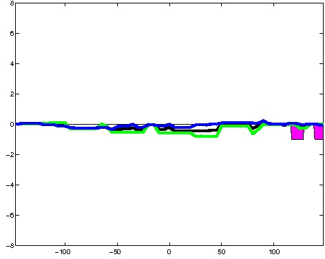
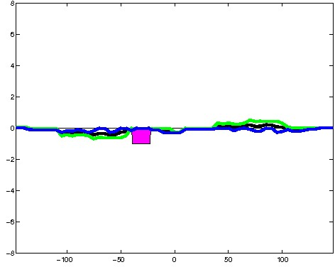
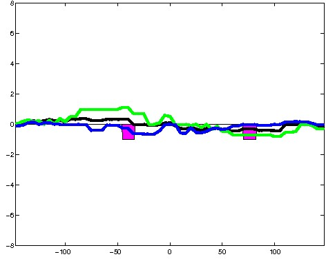
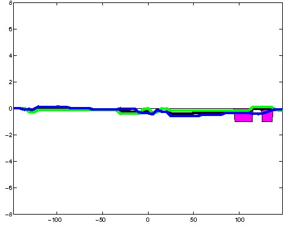
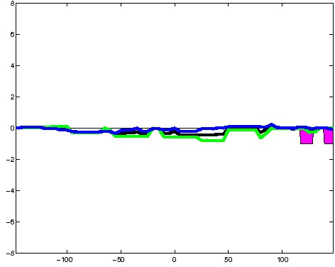
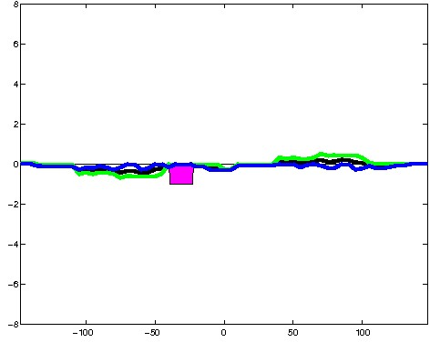
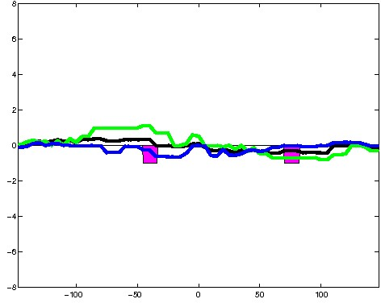
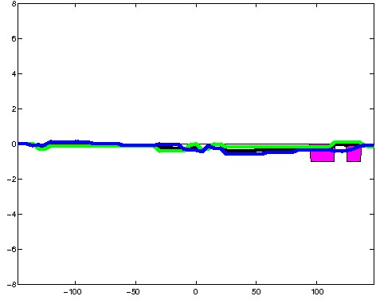
; picked in K562 (state 22:ReprW, DNase); matched; chr16:72,082,829-72,083,123 (295bp)") 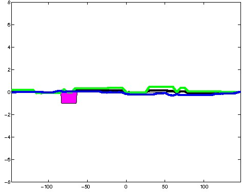
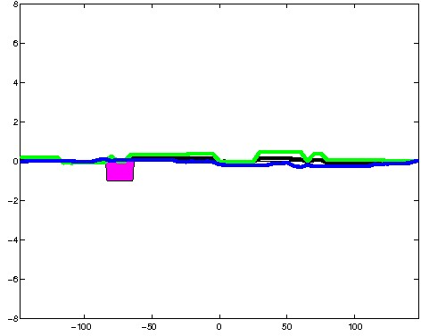